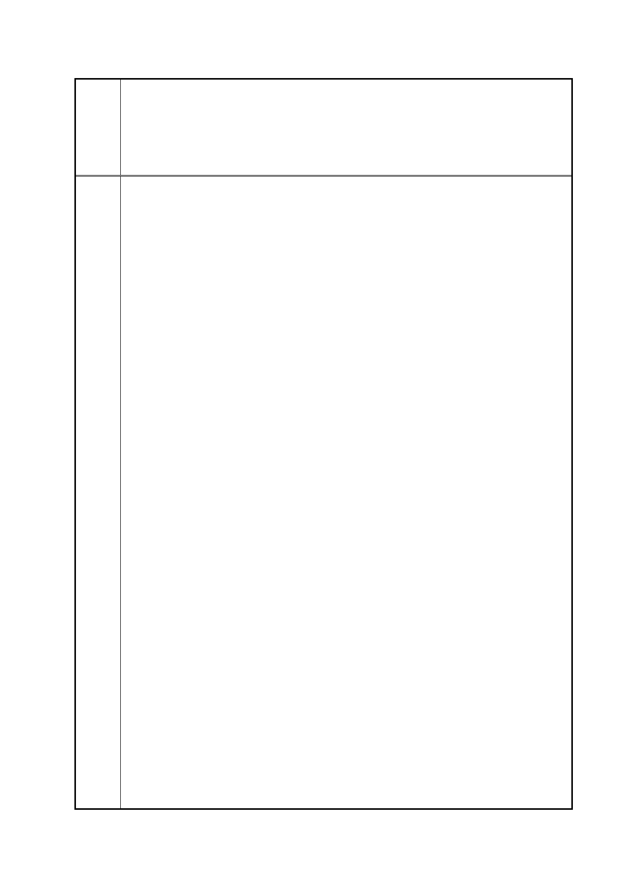

臺北市都市計畫委員會 公民或團體陳情意見綜理表
「變更臺北市信義區逸仙段二小段 33 地號等 21 筆土地（原臺北機廠）
案
名
工業區為創意文化專用區、特定專用區、道路及綠地用地主要計畫案」
及「擬定臺北市信義區逸仙段二小段 33 地號等 21 筆土地（原臺北機
廠）創意文化專用區、特定專用區、道路及綠地用地細部計畫暨劃定
都市更新地區計畫案」
不是先用美術館來騙大家，過 3、5 年後卻蓋了一堆住宅、飯店，
這樣是不對的。
3. 為何這個計畫是由臺鐵申請，但卻由市府簡報？都發局應該是扮
演裁判者的角色，而不是臺鐵隨便寫寫計畫，寫得不好就叫都發
局來幫忙。
4. 本案基地綠地僅占千分之六，開放空間過少。
5. 臺鐵所有之 59.5%土地未來要作何種使用，應先說明清楚。
臺鐵局高主任秘書
1. 本計畫特定專用區的利用，已經受到市政府的很多的限制，例如
退縮、軌道保留、建築物挑空，臺鐵也不太能接受，今天說明的
版本其實是市府的版本，而不是臺鐵的版本。
2. 俟都市計畫經民眾的陳情並經都委會審議通過後並公告實施
後，臺鐵才會依相關法令委託專業顧問公司進行發展規劃。
市民十一
1. 臺北機廠所有權人是中華民國，政府相關單位只是管理機關，機
廠未來相關規劃及使用應由全民決定。
2. 請問富岡基地的土地徵收及興闢費用是由誰支付？如果是國家
支付的，臺北機廠搬遷後，這塊中華民國的土地應該由民眾來討
論怎麼用。
3. 臺北市綠地雖占 55%，但扣除山區範圍，每個人分配到的綠地不
足 2 平方公尺。張樞老師著作的《臺北原來如此》提及臺北機廠
附近的 5 號及 16 號公園其實已經消失，請市府考量保留臺北機
廠作為大型綠地，減少熱島效應。
4. 私人土地由原始分區變更為住宅區或商業區，要求回饋是合理
的。既然這是一塊國有地，和民間一樣只 40.5％的比例是否足夠？
公有土地的回饋比例是否應予適度提高？
新仁里辦公處李里長財久
1. 今天會議應該早點通知，不是把責任推給區公所跟里長。這個案
子很多議員都很關心，相關的議員也沒有被通知到，應改進。
2. 松菸的開發地方居民是受害不是受益，卻無人協助解決相關問
題。臺北機廠應避免重複大巨蛋之錯誤，都委會旁聽只有 3 分鐘
發言，我們的書面陳情都沒有回答。這種 BOT 最糟糕就是全部
第 121 頁/共 154 頁